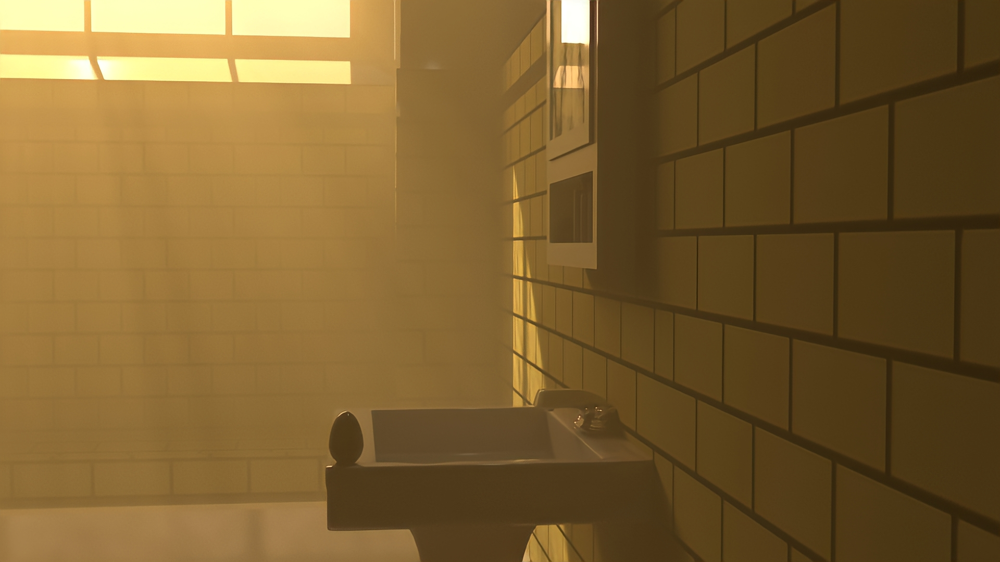
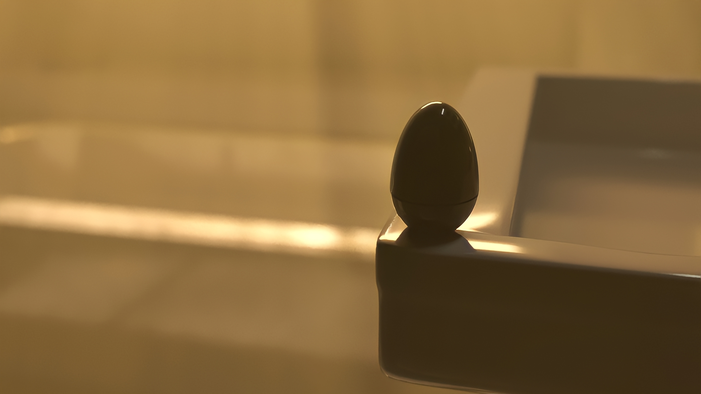

Visualization
Photoreal Interior Lighting Study
A fully rendered interior environment used to push lighting, material response, and composition skills independent of a VR or game-engine pipeline.



Overview
Not every project needs to run in a headset — this interior study is a straight rendering exercise, built to control light behavior, material response, and composition the way a cinematographer would light a physical set.
It's part of the same modeling-and-rendering foundation behind the VR training work, isolated here to show the visual craft on its own, without interaction design or engine constraints in the way.
Want to see the research behind it?
Visit Spextra (NSF) →